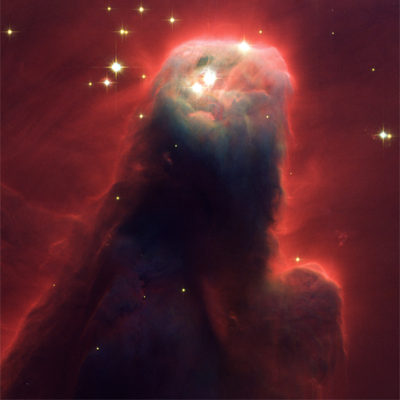
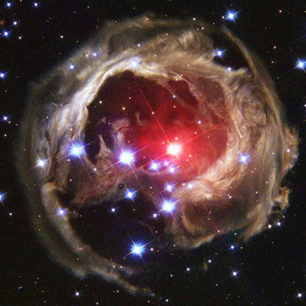
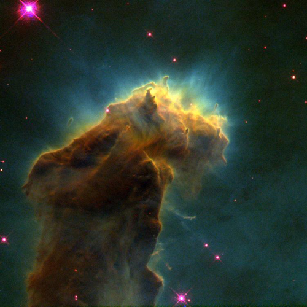

Supernova 1994D, visible as the bright spot at the lower left, occurred in the outskirts of the disk galaxy NGC 4526.

Radiation from hot stars off the top of the picture illuminates and erodes this giant, gaseous pillar.

V838 Mon is located about 20,000 light-years away from Earth at the outer edge of the Milky Way.

The Sombrero Galaxy is an unbarred spiral galaxy in the constellation Virgo approximately 30 million lights years away.

This region of active current star formation is part of a diffuse emission nebula about 6,500 light-years away.